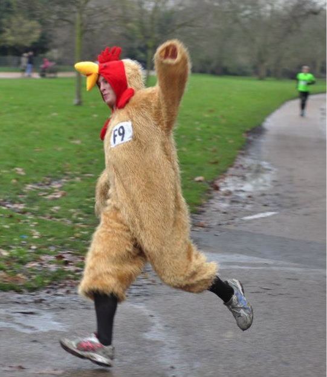

Enter the 2015 Hyde Park Relays

Sure you're faster?
Internal Entry (for Imperial students and staff)
Entries for Imperial teams will open on the first Monday (12th of January) of spring term!
8 simple steps to enter your team for the Relays on the 7th of February 2015! This year we introduce electronic chip timing!
You can enter 6 for a Men’s team (£36), 6 for a Mixed team (£36) and 4 for a Women’s team (£24).
- Gather a group of Imperialites (challenge your friends, lab buddies, sportsclub, wardens and lecturers!). Entry is much cheaper for imperial teams than external. This does mean that everyone in your team should be registered as student or staff.
- Think of a great team name to stand out from the crowd.
- Fill in the google form (to be released).
- Click here to buy your ticket online from the union website (to be released)!
- Pick up your race numbers in Metric in the morning of the race.
- Run Rabbit Run (fancy dress encouraged!)
- Don’t forget to join for the free food and afterparty!
- Had an amazing experience?!? Join ICXC for many more of these. For training join our mailing list!
External Entry (for non-Imperial racers)
Entries are now OPEN
5 Simple steps to join in the 67th Hyde Park Relays, the biggest student organised relay in the UK.
- Gather a group of friends and test your skill against the legendary Imperial Cross Country and Athletics group.
- Think of a great team name
- Fill in the google form.
- Buy your team entry online - You can enter a men’s/mixed team of 6 for £55 or a women’s team of 4 for £35. Everyone runs 5k!
- Travel to London, pick up your race numbers, Run, Eat (food included) and join the free after party at the Imperial Union!!
Accommodation
Unfortunately due to circumstances outside of our control we are no longer able to provide accommodation in Imperial College Union before or after the race. Sincere apologies to all who have already expressed interest in accommodation.
Although it is no longer possible to use Imperial College facilities for accommodation, we are looking for any feasible alternatives; however we cannot expect or promise anything for certain.